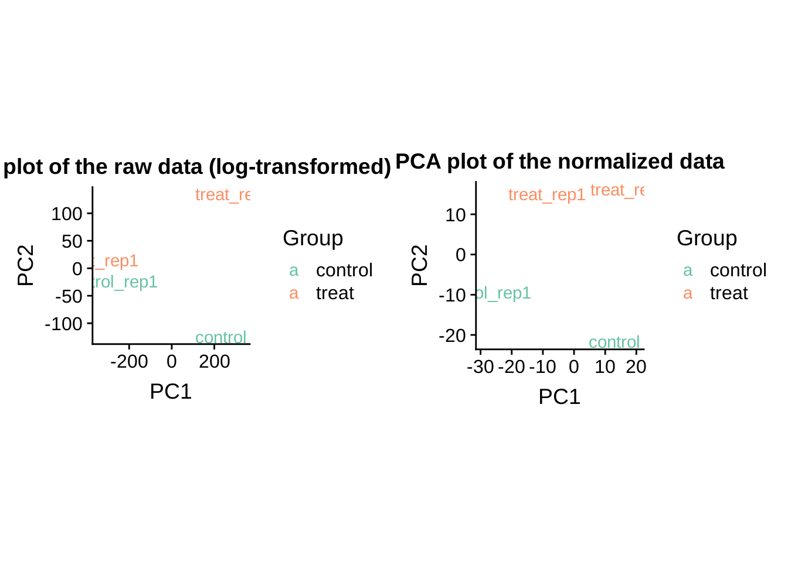
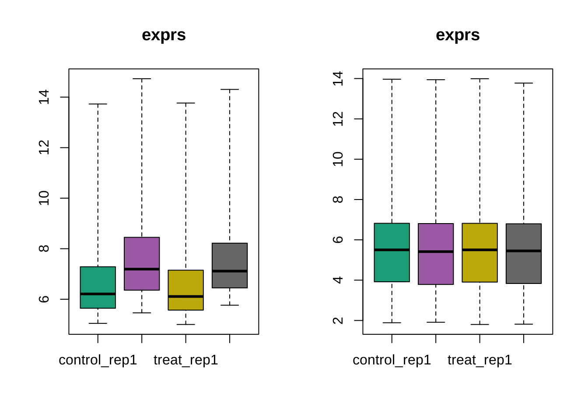
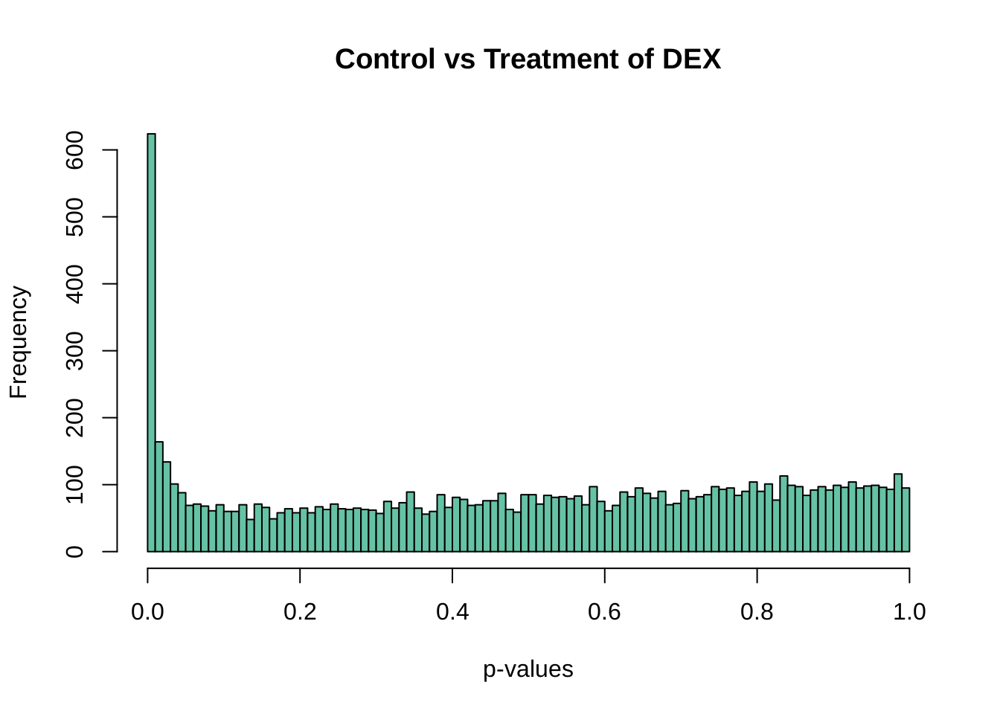
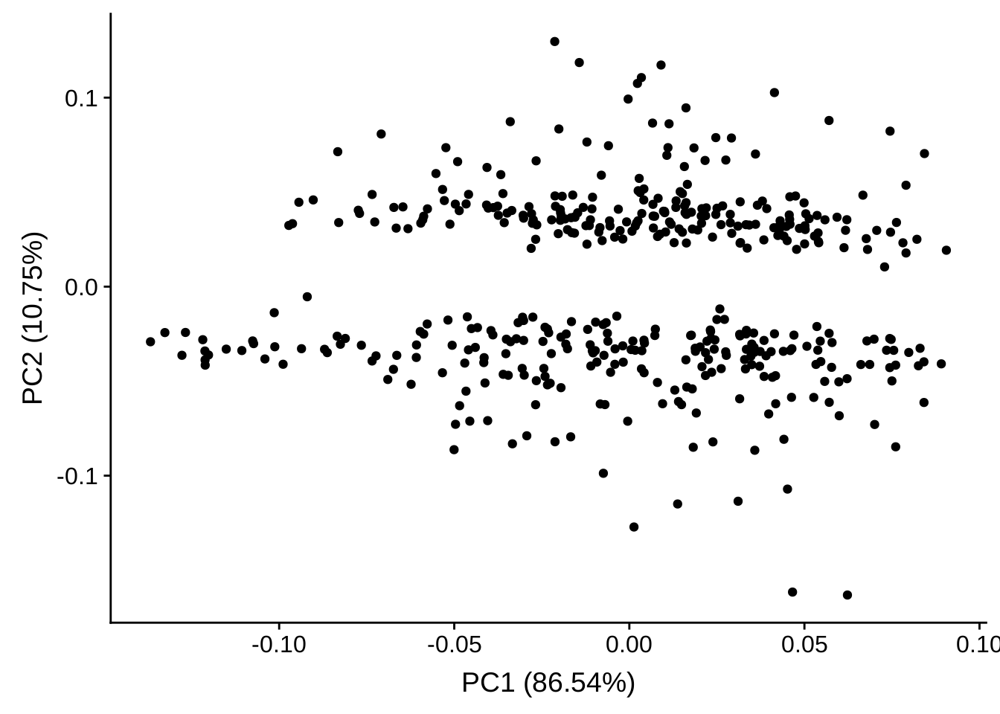

Microarray Data Analysis
Jialin Ma
October 17, 2018
Load Packages
suppressPackageStartupMessages({
library(here)
library(oligo)
})Load the dataset
dataset <- read.celfiles(list.files(here("data/microarray"), full.names = TRUE))## Loading required package: pd.hg.u95av2## Loading required package: RSQLite## Loading required package: DBI## Platform design info loaded.## Reading in : /home/jialin/Courses/code6150/data/microarray/GSM651310.CEL.gz
## Reading in : /home/jialin/Courses/code6150/data/microarray/GSM651315.CEL.gz
## Reading in : /home/jialin/Courses/code6150/data/microarray/GSM651320.CEL.gz
## Reading in : /home/jialin/Courses/code6150/data/microarray/GSM651325.CEL.gzdataset <- dataset[, c(paste0(c("GSM651310", "GSM651320", "GSM651315", "GSM651325"), ".CEL.gz"))]
sampleNames(dataset) <- c("control_rep1", "control_rep2", "treat_rep1", "treat_rep2")
pData(dataset)$group <- c("control", "control", "treat", "treat")
dataset## ExpressionFeatureSet (storageMode: lockedEnvironment)
## assayData: 409600 features, 4 samples
## element names: exprs
## protocolData
## rowNames: control_rep1 control_rep2 treat_rep1 treat_rep2
## varLabels: exprs dates
## varMetadata: labelDescription channel
## phenoData
## rowNames: control_rep1 control_rep2 treat_rep1 treat_rep2
## varLabels: index group
## varMetadata: labelDescription channel
## featureData: none
## experimentData: use 'experimentData(object)'
## Annotation: pd.hg.u95av2Quality control
Boxplot
boxplot(dataset, target = "core")MA plot
oligo::MAplot(dataset, pairs = TRUE, ylim = c(-1, 1))Quality report of the raw data
The following will generate a quality report of the raw microarray data in docs/microarray_qualitymetrics directory.
library(arrayQualityMetrics)
arrayQualityMetrics(expressionset = dataset,
outdir = "docs/microarray_qualitymetrics",
force = TRUE, do.logtransform = TRUE,
intgroup = c("group"))RMA
The RMA method proceeds with background subtraction, normalization and summarization using a deconvolution method for background correction, quantile normalization and the RMA (robust multichip average) algorithm for summarization.
edata <- oligo::rma(dataset)## Background correcting
## Normalizing
## Calculating Expressionedata## ExpressionSet (storageMode: lockedEnvironment)
## assayData: 12625 features, 4 samples
## element names: exprs
## protocolData
## rowNames: control_rep1 control_rep2 treat_rep1 treat_rep2
## varLabels: exprs dates
## varMetadata: labelDescription channel
## phenoData
## rowNames: control_rep1 control_rep2 treat_rep1 treat_rep2
## varLabels: index group
## varMetadata: labelDescription channel
## featureData: none
## experimentData: use 'experimentData(object)'
## Annotation: pd.hg.u95av2Access the quality after normalization
PCA plot before and after normalization
library(ggplot2)
library(cowplot)##
## Attaching package: 'cowplot'## The following object is masked from 'package:ggplot2':
##
## ggsaveplot_grid(
local({
PCA_raw <- prcomp(t(log2(exprs(dataset))), scale = FALSE)
dataGG <- data.frame(PC1 = PCA_raw$x[,1], PC2 = PCA_raw$x[,2],
Group = pData(dataset)$group)
qplot(PC1, PC2, data = dataGG, color = Group,
main = "PCA plot of the raw data (log-transformed)", asp = 1.0, geom = "text",
label = sampleNames(dataset)) + scale_colour_brewer(palette = "Set2")
}),
local({
PCA <- prcomp(t(exprs(edata)), scale = FALSE)
dataGG <- data.frame(PC1 = PCA$x[,1], PC2 = PCA$x[,2],
Group = pData(dataset)$group)
qplot(PC1, PC2, data = dataGG, color = Group,
main = "PCA plot of the normalized data", asp = 1.0, geom = "text",
label = sampleNames(edata)) +
scale_colour_brewer(palette = "Set2")
})
)
Boxplot before and after normalization
par(mfrow = c(1,2))
boxplot(dataset)
boxplot(edata)
par(mfrow = c(1,1))MA plot after normalization
oligo::MAplot(edata, pairs = TRUE, ylim = c(-1, 1))
Heatmap with sample-to-sample distance after normalization
It can not provide too much information for us since the number of samples is limited.
library(RColorBrewer)
library(pheatmap)
dists <- as.matrix(dist(t(exprs(edata)), method = "manhattan"))
diag(dists) <- NA
hmcol <- colorRampPalette(rev(brewer.pal(9, "PuOr")))(255)
pheatmap(dists, col = rev(hmcol), clustering_distance_rows = "manhattan",
clustering_distance_cols = "manhattan")
Filter based on intensity
Microarray data commonly show a large number of probes in the background intensity range. They also do not change much across arrays. Hence they combine a low variance with a low intensity. We want to filter these results as they may contribute to false positive results in the differential expression analysis.
edata_medians <- rowMedians(exprs(edata))
hist_res <- hist(edata_medians, 100, col="#e7efd8", freq = FALSE,
main = "Histogram of the median intensities",
xlab = "Median intensities")
emp_mu <- hist_res$breaks[which.max(hist_res$density)]
emp_sd <- mad(edata_medians)/2
prop_cental <- 0.50
lines(sort(edata_medians),
prop_cental*dnorm(sort(edata_medians), mean = emp_mu, sd = emp_sd),
col = "grey10", lwd = 4)
cut_val <- 0.05 / prop_cental
thresh_median <- qnorm(0.05 / prop_cental, emp_mu, emp_sd)
samples_cutoff <- 2
idx_thresh_median <- apply(exprs(edata), 1, function(x){
sum(x > thresh_median) >= samples_cutoff})
table(idx_thresh_median)## idx_thresh_median
## FALSE TRUE
## 5510 7115edata <- subset(edata, idx_thresh_median)Identification of differentially expressed genes
Create a simple design matrix.
library(limma)##
## Attaching package: 'limma'## The following object is masked from 'package:oligo':
##
## backgroundCorrect## The following object is masked from 'package:BiocGenerics':
##
## plotMAf <- factor(c("control", "control", "treat", "treat"))
design <- model.matrix(~ 0 + f)
colnames(design)## [1] "fcontrol" "ftreat"colnames(design) <- c("control", "treat")
design## control treat
## 1 1 0
## 2 1 0
## 3 0 1
## 4 0 1
## attr(,"assign")
## [1] 1 1
## attr(,"contrasts")
## attr(,"contrasts")$f
## [1] "contr.treatment"We can fit the linear model, define appropriate contrast to test the hypothesis on treatment effect and compute the moderated t–statistics by calling the eBayes function.
data.fit <- lmFit(exprs(edata), design)
head(data.fit$coefficients)## control treat
## 100_g_at 7.668756 7.715222
## 1000_at 7.500988 7.509880
## 1003_s_at 6.080299 5.955531
## 1004_at 5.637423 5.510949
## 1005_at 7.805104 9.312773
## 1006_at 7.453394 6.403360contrast.matrix <- makeContrasts(treat-control,levels=design)
data.fit.con <- contrasts.fit(data.fit,contrast.matrix)
data.fit.eb <- eBayes(data.fit.con)Volcano plot to show the distribution of fold change and p value.
volcanoplot(data.fit.eb,highlight=10)
Then we sort the results by their absolute t-statistics.
top <- topTable(data.fit.eb, number = Inf)
head(top)## logFC AveExpr t P.Value adj.P.Val B
## 37701_at 4.487768 7.288447 23.90482 8.923836e-07 0.00634931 3.279131
## 39528_at 2.155203 7.214587 14.46714 1.363637e-05 0.03491603 2.484241
## 1776_at 2.090149 7.318168 13.66205 1.855341e-05 0.03491603 2.354451
## 39681_at 2.219663 5.720843 13.51932 1.962953e-05 0.03491603 2.329679
## 40202_at 1.941558 6.657501 12.65317 2.798882e-05 0.03982809 2.166516
## 36630_at 1.995351 7.579214 11.72145 4.209550e-05 0.04991825 1.962962Check how many results can we get if we use a p value cutoff by 0.001 or an adjusted p value cutoff by 0.05.
table(top$adj.P.Val < 0.05)##
## FALSE TRUE
## 7109 6table(top$P.Value < 0.001)##
## FALSE TRUE
## 7092 23We notice that the number of differential expressed genes are limited, which indicates the the effect of 4 hour DEX treatment may not be significant in altering the gene expression.
Then plot a histogram of p value distribution.
hist(top$P.Value, col = brewer.pal(3, name = "Set2")[1],
main = "Control vs Treatment of DEX by 4 hours", xlab = "p-values")
We zoom in the plot to see p value distribution between 0 and 0.1.
hist(top$P.Value[top$P.Value < 0.1], col = brewer.pal(3, name = "Set2")[1],
main = "Control vs Treatment of DEX by 4 hours", xlab = "p-values")Zoom in again and the orange bin indicates the differentially expressed genes if we use a p value cutoff by 0.001.
local({
breaks <- 0:10/1000
color1 <- brewer.pal(3, name = "Set2")[1]
color2 <- brewer.pal(3, name = "Set2")[2]
color <- rep.int(color1, length(breaks) - 1)
color[1] <- color2
data <- top$P.Value[top$P.Value < 0.01]
hist(data, col = color,
main = "Control vs Treatment of DEX by 4 hours", xlab = "p-values", breaks = breaks)
})Annotating genes
We need to annotate the gene names by the probe IDs.
suppressPackageStartupMessages({
library(hgu95av2.db)
})
get_symbol <- function(probeid) {
ans <- mapIds(hgu95av2.db::hgu95av2.db,
keys = probeid, keytype = "PROBEID", column = "SYMBOL", multiVals = "first")
unname(ans)
}
get_genename <- function(probeid) {
ans <- mapIds(hgu95av2.db::hgu95av2.db,
keys = probeid, keytype = "PROBEID", column = "GENENAME", multiVals = "first")
unname(ans)
}
top$symbol <- get_symbol(rownames(top))## 'select()' returned 1:many mapping between keys and columnstop$gene_name <- get_genename(rownames(top))## 'select()' returned 1:many mapping between keys and columnsGenerate a table of differentially expressed genes
We use a p value cutoff by 0.001.
selected <- top[, c("symbol", "gene_name", "logFC", "P.Value", "adj.P.Val")]
#top <- cbind(data.frame(probeID = rownames(top), stringsAsFactors = FALSE), top)
#rownames(top) <- NULL
selected <- selected[selected$P.Value < 0.001,]
knitr::kable(selected)| symbol | gene_name | logFC | P.Value | adj.P.Val | |
|---|---|---|---|---|---|
| 37701_at | RGS2 | regulator of G protein signaling 2 | 4.4877683 | 0.0000009 | 0.0063493 |
| 39528_at | RRAD | RRAD, Ras related glycolysis inhibitor and calcium channel regulator | 2.1552028 | 0.0000136 | 0.0349160 |
| 1776_at | RRAD | RRAD, Ras related glycolysis inhibitor and calcium channel regulator | 2.0901488 | 0.0000186 | 0.0349160 |
| 39681_at | ZBTB16 | zinc finger and BTB domain containing 16 | 2.2196632 | 0.0000196 | 0.0349160 |
| 40202_at | KLF9 | Kruppel like factor 9 | 1.9415580 | 0.0000280 | 0.0398281 |
| 36630_at | TSC22D3 | TSC22 domain family member 3 | 1.9953514 | 0.0000421 | 0.0499183 |
| 1814_at | TGFBR2 | transforming growth factor beta receptor 2 | 1.6309718 | 0.0000782 | 0.0785749 |
| 36629_at | TSC22D3 | TSC22 domain family member 3 | 4.2511045 | 0.0000883 | 0.0785749 |
| 37760_at | BAIAP2 | BAI1 associated protein 2 | 1.3443442 | 0.0001677 | 0.1325401 |
| 31850_at | GCLC | glutamate-cysteine ligase catalytic subunit | 1.2492825 | 0.0002082 | 0.1481454 |
| 34721_at | FKBP5 | FK506 binding protein 5 | 2.8581334 | 0.0002476 | 0.1601256 |
| 38013_at | MTUS1 | microtubule associated scaffold protein 1 | 1.1129654 | 0.0004426 | 0.2624371 |
| 36100_at | VEGFA | vascular endothelial growth factor A | -1.2173336 | 0.0005370 | 0.2872803 |
| 33113_at | CITED2 | Cbp/p300 interacting transactivator with Glu/Asp rich carboxy-terminal domain 2 | 1.1614203 | 0.0005779 | 0.2872803 |
| 37225_at | KANK1 | KN motif and ankyrin repeat domains 1 | 1.0982152 | 0.0006381 | 0.2872803 |
| 40855_at | SAMD4A | sterile alpha motif domain containing 4A | 1.0942596 | 0.0006460 | 0.2872803 |
| 37430_at | ALOX15B | arachidonate 15-lipoxygenase, type B | 1.7852935 | 0.0007265 | 0.2993091 |
| 634_at | PRSS8 | serine protease 8 | 1.0246834 | 0.0008545 | 0.2993091 |
| 1052_s_at | CEBPD | CCAAT enhancer binding protein delta | 1.2372588 | 0.0008687 | 0.2993091 |
| 33272_at | SAA1 | serum amyloid A1 | 1.7293550 | 0.0009106 | 0.2993091 |
| 40522_at | GLUL | glutamate-ammonia ligase | 2.8331430 | 0.0009608 | 0.2993091 |
| 33900_at | FSTL3 | follistatin like 3 | 0.9502991 | 0.0009643 | 0.2993091 |
| 33131_at | SOX4 | SRY-box 4 | -0.9740144 | 0.0009675 | 0.2993091 |
Gene clustering
The following is a heatmap of gene expression values of the differentially expressed genes.
library(pheatmap)
mat <- exprs(edata)[rownames(selected), ]
rownames(mat) <- selected$symbol
pData(edata)$sample_name <- rownames(pData(edata))
anno <- as.data.frame(pData(edata))[, c("group", "sample_name")]
pheatmap(mat, annotation_col = anno,
main = "Heatmap of gene expression levels")
We can roughly divide the genes (probes) into two clusters, and the control/treat samples are also clearly separated.
PCA plot
library(ggfortify)
autoplot(prcomp(exprs(edata)[rownames(selected), ]))The PCA plot did not provide much useful information.